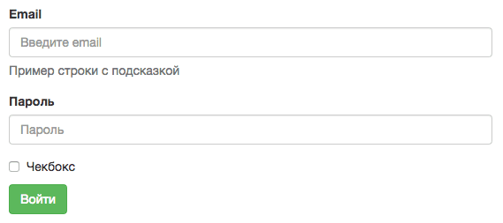
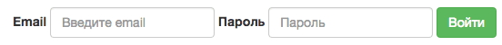
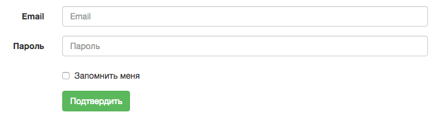
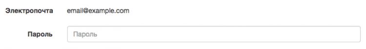
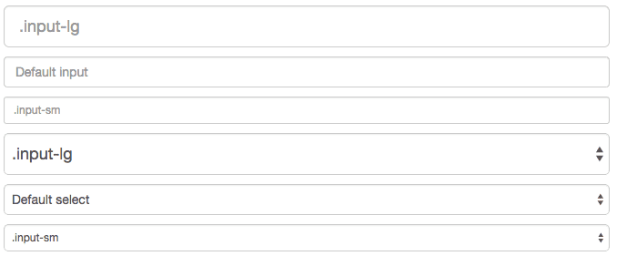

Уроки з Bootstrap. Урок №6: створення форм
З кнопками розібралися, але як же бути з формами? Bootstrap дозволяє додавати оформлення будь-яким формам на сторінці. Форми, створені на Bootstrap, можуть бути горизонтальними й вертикальними.
Стандартні налаштування
Елементи <input>, <textarea> і <select> при додаванні їм класу .form-control стають блочними й займають 100% ширини батьківського блоку.
Типи форм у Bootstrap
За допомоги різних класів ви можете оформити форму
- вертикально
- горизонтально
- у вигляді строчних елементів (однією строкою)
Є три основні правила для створення форм у бутстрапі:
- використовуйте
<form role="form"> - всі елементи форми та їхні назви мають знаходитися в блоці
<div class="form-group">, це треба для оптимальних відстаней між строками - додавайте клас
.form-controlдля елементів<input>,<textarea>і<select>
Вертикальна форма
За замовчуванням будь-яка форма буде оформлена как вертикально-орієнтована.

Ось приклад стандартної форми, створеної за допомоги Bootstrap:
<form role="form"> <div class="form-group"> <label for="email">Email</label> <input type="email" class="form-control" id="email" placeholder="Введите email"> <p class="help-block">Приклад строки з підказкою</p> </div> <div class="form-group"> <label for="pass">Пароль</label> <input type="password" class="form-control" id="pass" placeholder="Пароль"> </div> <div class="checkbox"> <label><input type="checkbox"> Чекбокс</label> </div> <button type="submit" class="btn btn-success">Увійти</button> </form>
Строчна форма
Строчна форма означає, что всі її елементи та їхні назви (<label>) будуть розташовані однією строкою з вирівнюванням зліва.
Зверніть увагу: строчна форма буде відображатись як класична на екранах розміром менше 768 пікселів в ширину.
Єдине правило, що перетворює класичну форму в строчну:
- додати клас
.form-inlineдо тегу<form>
В цьому прикладі — створення строчної форми з двома полями й кнопкою підтвердження:
<form role="form" class="form-inline"> <div class="form-group"> <label for="email">Email</label> <input type="email" class="form-control" id="email" placeholder="Введите email"> </div> <div class="form-group"> <label for="pass">Пароль</label> <input type="password" class="form-control" id="pass" placeholder="Пароль"> </div> <button type="submit" class="btn btn-success">Увійти</button> </form>

Горизонтальна форма
Такий вид форми значно відрізняється синтаксисом від двох попередніх. Є два правила для створення горизонтальних форм в Bootstrap:
- додати клас
.form-horizontalдо тегу<form> - додати клас
.control-labelвсім елементам<label>
Ось приклад коду горизонтальної форми:
<form class="form-horizontal">
<div class="form-group">
<label for="mail" class="col-sm-2 control-label">Email</label>
<div class="col-sm-10">
<input type="email" class="form-control" id="mail" placeholder="Email">
</div>
</div>
<div class="form-group">
<label for="pass" class="col-sm-2 control-label">Пароль</label>
<div class="col-sm-10">
<input type="password" class="form-control" id="pass" placeholder="Пароль">
</div>
</div>
<div class="form-group">
<div class="col-sm-offset-2 col-sm-10">
<div class="checkbox">
<label>
<input type="checkbox"> Запам'ятати мене
</label>
</div>
</div>
</div>
<div class="form-group">
<div class="col-sm-offset-2 col-sm-10">
<button type="submit" class="btn btn-success">Підтвердити</button>
</div>
</div>
</form>

Чекбокси й радіокнопки
Чекбокси потрібні для вибору кількох параметрів, радіокнопки — для вибору єдиного варіянту.
<div class="checkbox"> <label> <input type="checkbox" value="check1"> Звичайний чекбокс, який можна відмітити </label> </div> <div class="checkbox disabled"> <label> <input type="checkbox" value="check2" disabled> Заблокований чекбокс, не відмічається </label> </div>
І аналогічний приклад для радіокнопок:
<div class="radio"> <label> <input type="radio" name="optionsRadios" id="radio1" value="option1" checked> Перший елемент списку з радіокнопок, її можна вибирати </label> </div> <div class="radio"> <label> <input type="radio" name="optionsRadios" id="radio22" value="option2" disabled> Друга опція списку, заблокована </label> </div> <div class="radio disabled"> <label> <input type="radio" name="optionsRadios" id="radio3" value="option3"> Третя смішна опція </label> </div>
Щоб заблокувати вибір чекбоксу або радіокнопки, їм додають атрибут disabled.

Строчні чекбокси й радіокнопки
Використовуйте класи .checkbox-inline і .radio-inline для того, щоб зробити ці елементи строчними:
<label class="checkbox-inline"> <input type="checkbox" id="inlineCheckbox1" value="option1"> 1 </label> <label class="checkbox-inline"> <input type="checkbox" id="inlineCheckbox2" value="option2"> 2 </label> <label class="checkbox-inline"> <input type="checkbox" id="inlineCheckbox3" value="option3"> 3 </label>
<label class="radio-inline"> <input type="radio" name="inlineRadioOptions" id="radio1" value="option1"> 1 </label> <label class="radio-inline"> <input type="radio" name="inlineRadioOptions" id="radio2" value="option2"> 2 </label> <label class="radio-inline"> <input type="radio" name="inlineRadioOptions" id="radio3" value="option3"> 3 </label>

Випадні списки
Тут все дуже просто: тегу <select> треба призначити класс .form-control.
<select class="form-control"> <option>1</option> <option>2</option> <option>3</option> <option>4</option> <option>5</option> </select>
Якщо ви хочете додати списку можливість вибору кількох варіянтів, додайте йому атрибут multiple:
<select class="form-control" multiple> <option>1</option> <option>2</option> <option>3</option> <option>4</option> <option>5</option> </select>
Статичні надписи замість полей
Поля форми можна заміняти текстовими елементами, для цього потрібен клас .form-control-static для елементу <p>:
<form class="form-horizontal"> <div class="form-group"> <label class="col-sm-2 control-label">Електропочта</label> <div class="col-sm-10"> <p class="form-control-static">email@example.com></p> </div> </div> <div class="form-group"> <label for="pass" class="col-sm-2 control-label">Пароль</label> <div class="col-sm-10"> <input type="password" class="form-control" id="pass" placeholder="Пароль"> </div> </div> </form>

Контекстні класи
В Bootstrap є три класи для оформлення різних станів полів у формі:
- успіх, клас
.has-success - попередження, клас
.has-warning - помилка, клас
.has-error
Цей клас треба призначити елементу .form-group:
<div class="form-group has-success"> <label class="control-label" for="succ">Поле без помилок</label> <input type="text" class="form-control" id="succ"> </div> <div class="form-group has-warning"> <label class="control-label" for="warn">Поле з попередженням</label> <input type="text" class="form-control" id="warn"> </div> <div class="form-group has-error"> <label class="control-label" for="err">Поле з помилкою</label> <input type="text" class="form-control" id="err"> </div> <div class="has-success"> <div class="checkbox"> <label> <input type="checkbox" id="check-succ" value="option1"> Чекбокс без помилок </label> </div> </div> <div class="has-warning"> <div class="checkbox"> <label> <input type="checkbox" id="check-warn" value="option1"> чекбокс із попередженням </label> </div> </div> <div class="has-error"> <div class="checkbox"> <label> <input type="checkbox" id="checkboxError" value="option1"> Чекбокс з помилкою </label> </div> </div>

Розміри полів
Щоб змінити розмір елемента форми, йому можна приначити один з класів:
.input-sm.input-lg
